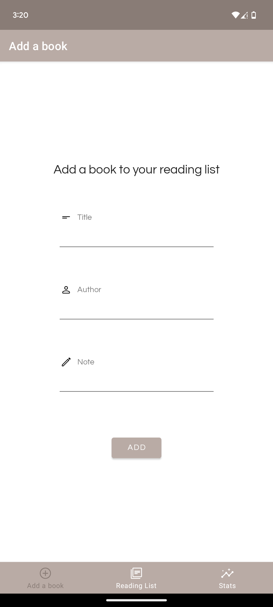
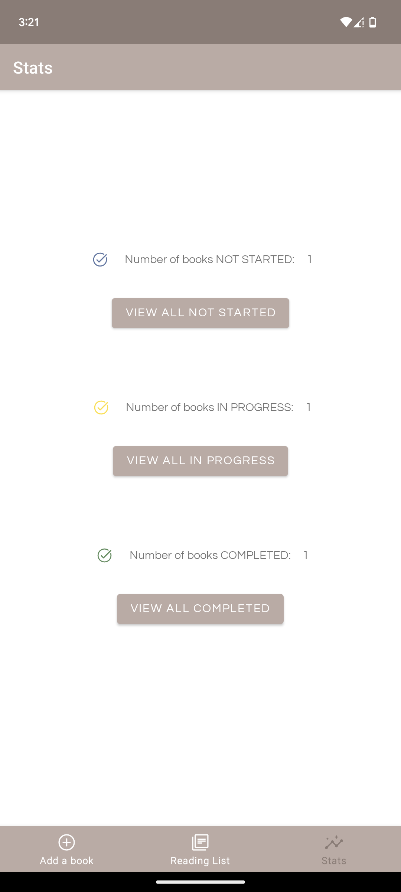
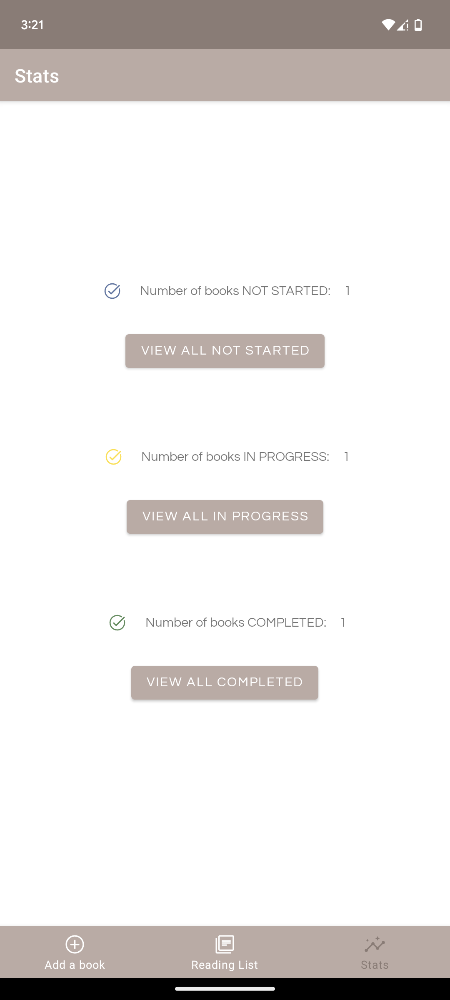

Reading List Tracker
View on Github
Overview
Reading is one of my favourite hobbies. However, as a programming student, there is much studying and homework to do so books have accumulated in my library to be read!
The idea behind this application is to keep track of books that I have yet to read, continue, or finished reading (so that I may recommend them to other people).

 
